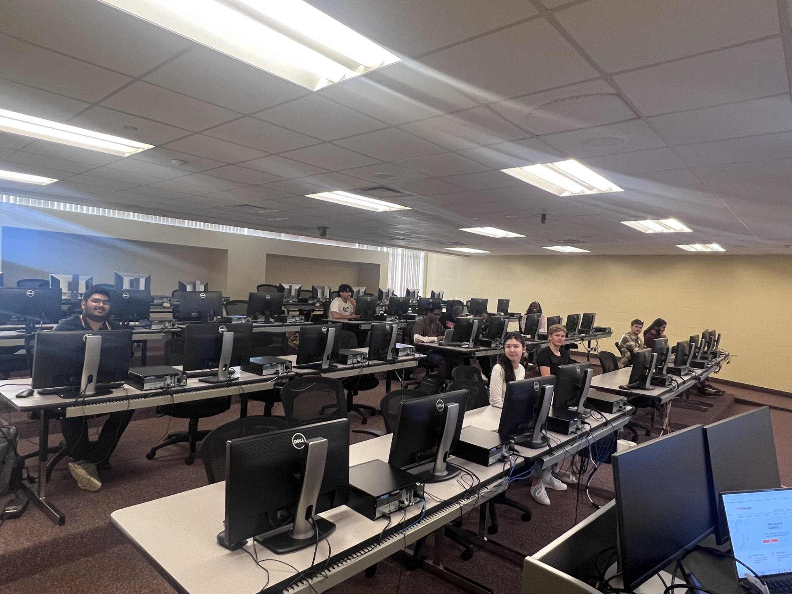
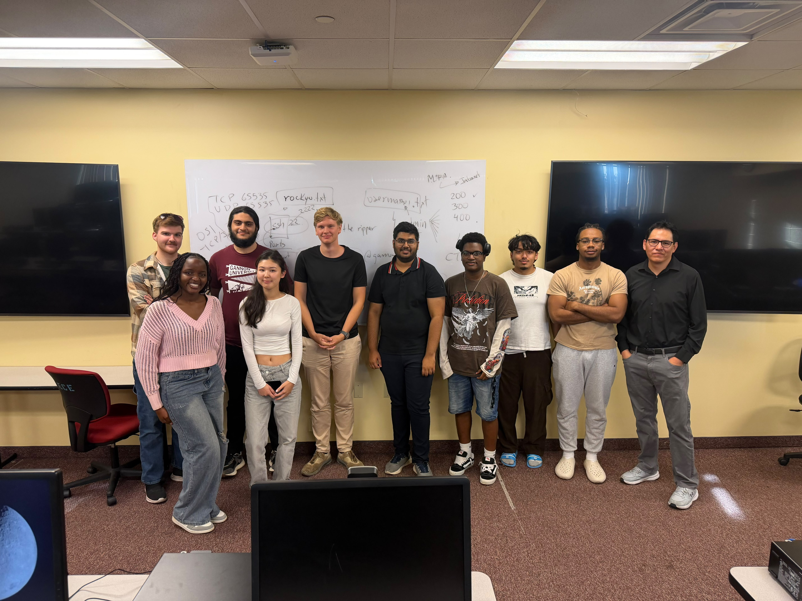
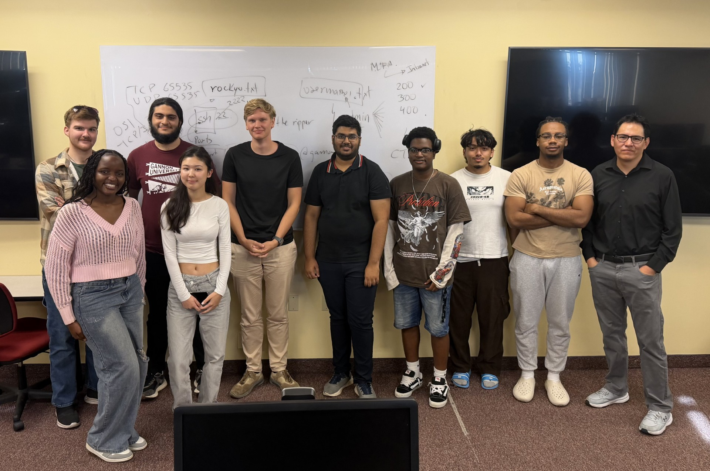

Another great hands-on session with the Gannon Hacks Cyber Club! This week, members explored several fundamental cybersecurity concepts while working through a practical TryHackMe challenge. The goal wasn't simply to complete the challenge, but to understand the technologies, commands, and security concepts behind each step.
Learning the Fundamentals
Throughout the session, we discussed and researched a wide range of topics that every cybersecurity student should understand. Members explored different Linux distributions and became more familiar with working in Linux environments. We also reviewed firewalls, common network ports, the OSI model, intranets, and the importance of Multi-Factor Authentication (MFA) as an additional layer of security.
Rather than simply providing commands to complete the challenge, students were encouraged to research unfamiliar commands and understand what each one was actually doing.

From Concepts to Hands-On Practice
One of the main goals of Gannon Hacks is to connect cybersecurity theory with practical experience. During the TryHackMe activity, members encountered tools and techniques commonly used in cybersecurity labs, including Hydra and John the Ripper. These tools provided an opportunity to discuss password security, authentication, password auditing, and why weak credentials continue to represent a major security risk.
The session also generated discussions about how networking, operating systems, authentication, and security tools work together during both offensive and defensive cybersecurity activities.

Learning by Doing
Cybersecurity includes a large number of tools, commands, protocols, and technologies, and nobody is expected to know all of them from memory. An important part of the session was learning how to investigate a problem, research a command, test an idea, and understand the results. That process is one of the skills we want members to develop through Gannon Hacks.

New members are always welcome, regardless of previous cybersecurity experience. Come ready to learn, experiment, ask questions, and break things ethically.
Learn. Compete. Build. Break things ethically. — Gannon Hacks Cyber Club, Gannon University